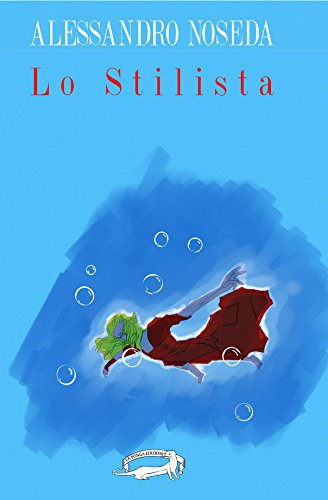

1) Ho molto apprezzato la sintesi e la concretezza del tuo libro “Lo stilista”: come mai una scelta così controcorrente rispetto a molti autori contemporanei?
Probabilmente è un mio tratto distintivo, formatosi a pane e Sciascia, Scerbanenco, Gadda, Camilleri… avete mai trovato un loro romanzo con una sola pagina in più del necessario?
In realtà cerco di raccontare una storia, possibilmente interessante, asciutta, diretta, scevra da fronzoli e abbellimenti e di portare alla luce l’animo dei protagonisti. La cornice m’interessa decisamente meno del quadro.
2) In alcune tue interviste spieghi che ti sei appassionato al genere giallo fin da ragazzo e che hai sempre letto molto: ma come sei passato dalla teoria alla pratica?
Ho iniziato a leggere i “Gialli dei Ragazzi” da adolescente. (Ve li ricordate? Li vendevano in tutte le edicole). Da allora non sono più riuscito a smettere di comprare libri!
Per essere sinceri, scrivere non è stata una scelta meditata: soffro, anche per periodi non brevissimi, d’insonnia. Quando ho dovuto occupare in qualche modo le lunghe notti in bianco, il passaggio è avvenuto naturalmente. Avevo in testa idee e immagini nate dalla cronaca nera, da racconti di amici, da tante letture. Ho solo provato a metterle sulla carta. Non pensavo neppure che sarebbero state pubblicate. Devo tutto a Omar Gatti che mi lesse e segnalò a Valerio Villa de La Ponga Edizioni.
3) Mi è piaciuto molto il personaggio del professor Guidolin, in tutte le sue sfaccettature, compreso il cagnolino: che rapporto hai con gli animali?
Il professor Guidolin è un personaggio sul quale ho lavorato molto per sfuggire agli stereotipi. È complesso e complicato, tremendamente umano e reale.
Amo da sempre gli animali e infatti convivo con un pinscher (Billy) e una gatta (Zoe) che sono diventati parte integrante della famiglia.
4) Confesso che non ho ancora letto la trilogia di Luca Mariani ma so che può essere definito “un finanziere triste”; anche in questo tuo “lo stilista” ci sono uomini tristi (mi riferisco in particolare al sopracitato professor Guidolin e a Fabio Mauri): quanto sei nostalgico e melanconico?
Chi di noi non lo è? Credo che melanconia e nostalgia appartengano ad ognuno di noi. Forse invecchiando il fenomeno si acuisce…
5) Ogni tuo libro si apre con una poesia di Paolo Zanon. Vuoi parlarci di questo autore e di come queste poesie si legano ai tuoi romanzi?
Paolo è un amico, tanto bravo quanto riservato. Ha una sensibilità unica per scrittura e pittura. Ho letto le sue poesie e me ne sono innamorato. Ho dovuto combattere per avere il privilegio di usarle come incipit dei miei racconti. Spero di convincerlo a farne una raccolta, magari un’antologia con altri autori.
6) “Lo stilista” è un invito a riflettere sul femminicidio e sugli omicidi seriali. C’è qualche caso di cronaca che ti ha colpito particolarmente?
Aborro la violenza in ogni forma. Ancor più quando a danno di soggetti deboli ed indifesi: disabili, anziani, bambini, donne, animali.
Ogni giorno ascoltiamo notizie terribili: bisogna fare molto di più per prevenire queste tragedie. Investire nella scuola, nei servizi sociali, nella sanità. Non ho soluzioni, ma sono convinto che istruire aiuti a migliorare. Gli insegnanti e le famiglie hanno un compito importantissimo per formare gli adulti di domani.
7) Vuoi parlarci del motivo che ti ha portato a dedicare il tuo libro al brigadiere Marino Ferraro, deceduto durante l’inseguimento di un pregiudicato?
Marino era un uomo che credeva nella divisa e nel proprio lavoro. Lo faceva con coscienza e passione. Dopo tanti anni di servizio avrebbe potuto mollare l’autopattuglia, ma sapeva che sulla strada era più utile. Avrebbe potuto anche lasciare andare il delinquente. Forse altri avrebbero fermato la propria corsa. Lui no. Sapeva che spacciava ai ragazzini. Voleva arrestarlo.
Ho avuto la fortuna di conoscere sua moglie (che, tra l’altro, ha appena pubblicato un bel noir “collettivo” con lo pseudonimo Andrea Bloch) e un omaggio a chi ha perso la vita nell’adempimento del proprio dovere è davvero ben poca cosa.
Stimo, rispetto e sono grato a tutti coloro che rischiano quotidianamente la pelle per assicurare a noi libertà e sicurezza.
8) Ti è capitato di avvicinarti al thriller nordico? Conosci qualche autore?
Certo. Credo che sia impossibile amare il thriller e non leggere gli autori scandinavi.
Conosco Mankell, Larson, Lackberg, Nesser, Indrason, Nesbo... anche se - devo ammettere - sono tremendamente nazionalista e prediligo i conterranei, forse meno noti fuori confine, ma altrettanto bravi.
Alessandro Noseda
Intervista a cura di Maria Sole Bramanti
Di ALESSANDRO NOSEDA su Thrillernord:
 IL LIBRO - All’ombra della Mole, Torino trema. Lo Stilista è la fuori, a caccia di giovani donne in sovrappeso da rimodellare a costo della vita, al fine di trasformarle in manichini umani per le sue fantasie malate. Là fuori, tuttavia, c’è anche Laura Bassi, capitano dell’Arma dei Carabinieri, una donna ferita ma mai doma, determinata a fermare lo stilista una volta per tutte cercando, nel frattempo, di rimettere insieme i pezzi della propria vita privata...